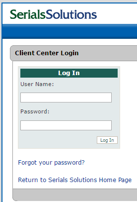
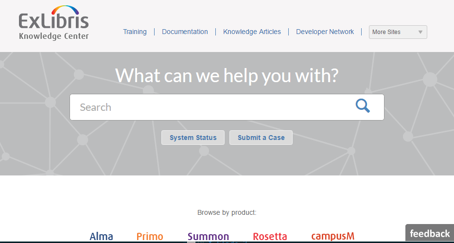
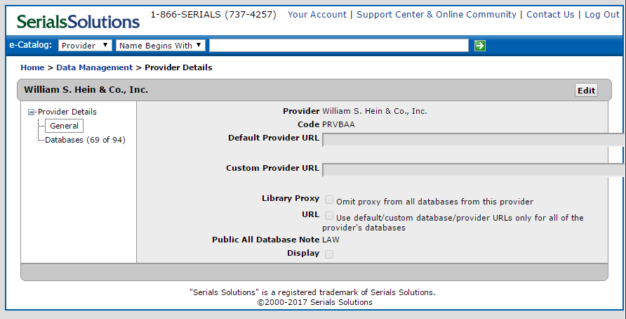
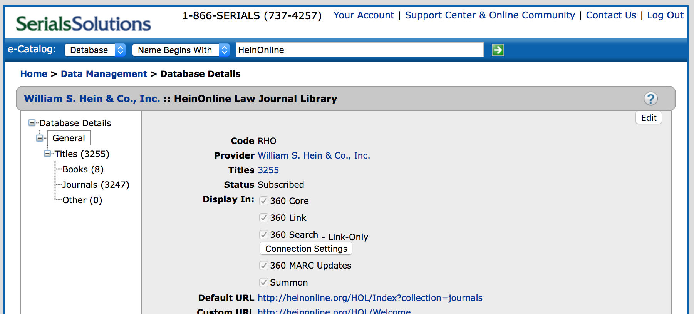
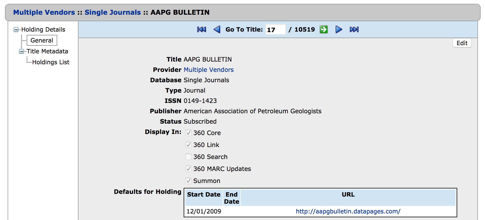
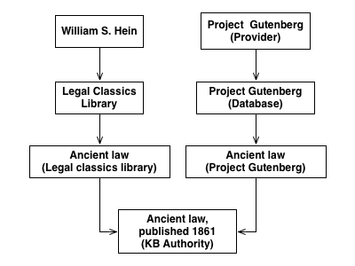
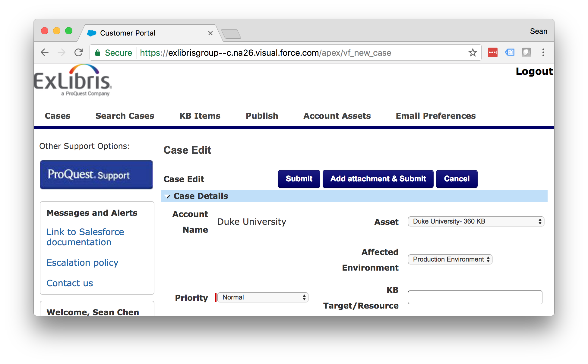
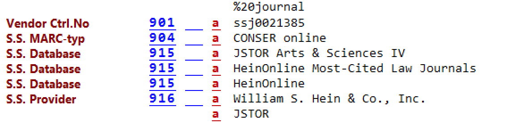
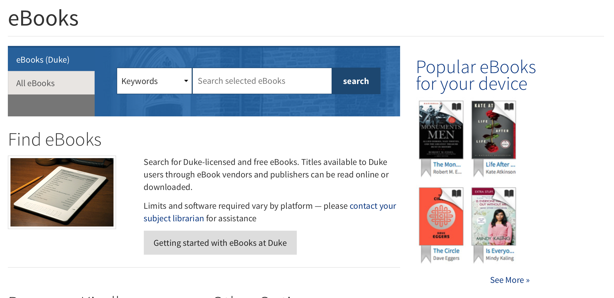
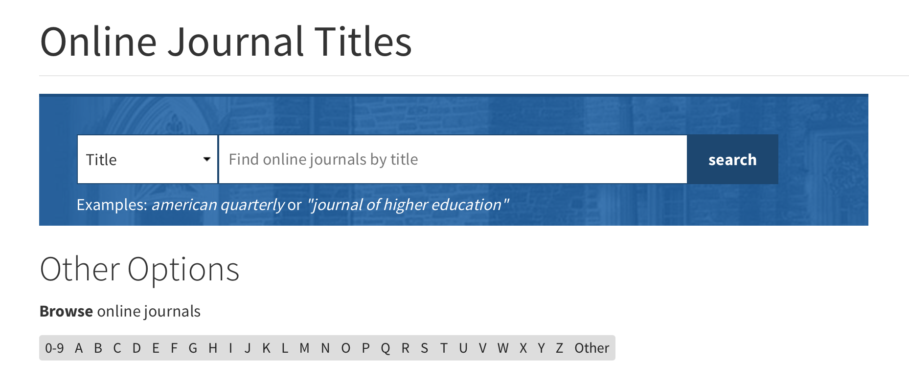

Serials Solutions
Sean Chen
Created: 2017-03-14 Tue 08:47
Outline
Outline
- Learning Outcomes
- Getting Started
- Knowledgebase
- Updating the KB
- MARC Updates
- Searching & Finding
- Exercises
Learning Outcomes
- Understand how data in the Knowledgebase gets updated
- Become familiar with how eresource data relates to Duke systems
Learn how to use the Client Center
Getting Started
Logging In

- Getting an account
Products
- 360 Core
- Ulrichsweb
- 360 Link
- 360 MARC Updates
- 360 Search
- Summon
Support Center & Online Community

Figure 2: Where to find help
Exercise
Knowledgebase
Documentation Resources
- Overview of the Knowledgebase
- ProQuest description
- Scope of content: Ebooks, Ejournals, Databases
- Discovery is being driven by the quality of the metadata that is available
- The Knowledgebase is what we actually purchase access to and that Ex Libris/ProQuest is actually updating.
Data is being maintained by SerSol staff
Entities in the KB
How is the world of electronic resources modeled in the Serials Solutions Knowledgebase?
Providers

Figure 3: William S. Hein provider record
Database

Figure 4: Database record for HeinOnline Law Journal Library
Holding

Figure 5: Holding record for AAPG Bulletin in Single Journals
Titles

Figure 6: Multiple holdings of same title
Model

KB Normalization
- Serials Solutions ID (SSID)
- SSJ: in title views and in MARC records
- SSIB: in title views and in MARC records
- Title ID: holding ID in reports
- Databases have identifiers also
Constantly updating the KB identifying resources that are the same
Exercise
Updating the KB
- Continually updating
- In the support center:
Typical Support Request
- Discover that there is a problem
- Open a case
- Monitor that case
- Follow up as necessary
Opening a Case
- Through the ExL Salesforce Customer Portal
- Request an account from Perkins
- Make sure the grants are correct
Salesforce

Figure 8: Submitting a case
Tips for Success
- include as much detail as possible in the original request
- most data changes have to go to another stage
- a separate data management team at SerSol
Local Changes
What sorts of things do folks here at the Law Library and at ERSM do?
Activations
- At the database level
- subscribed
- not tracked
- title coverage: "we only subscribe to some titles"
At the holding level "subscribing"
- Subscribed
- Not tracked
Activations
- We have some control over the coverage dates
- This comes from our license information or our agreement
- There is some specialized formatting to say something like Current year only
- We leave local notes in "shared" databases
Exercise
MARC Updates
- Weekly process
- Matches the authority versions of journals and ebooks to MARC records
- separate records for print and online!
- Records are loaded each week
Matching
- Generally the process seems to be based on LCCN
- Prefer print
- Will generate a brief record with no match
Loading
- Records are loaded on a weekly basis
- overlap and match based on SSID
- Records are sorted into brief and full
MARC Records
- 901: SSID
- 904: Source of Record
- 915: Database
- 916: Provider
- 856: URL
- 035: SSID
SerSol MARC Fields

Figure 9: Example MARC fields
Exercise
Searching & Finding
eBooks
eBooks

Figure 10: Finding eBooks
Online Journals
Online Journals

Figure 11: Finding Online Journals
Catalog
- Searching the catalog
- MARC records create searchable descriptions in Endeca
- URLs go to the "1-Click"
- displays the resource in a browser window with additional controls to navigate to other providers
- The database you go to is configured by a priority order
Exercises
Exercise 1
- Find the journal: The Supreme Court review in the Online Journal Finder
- What databases is it available in to Duke users?
Exercise 2
- Find the journal The Supreme Court review in Serials Solutions Client Center
- What databases is it activateable in?
Exercise 3
- Find the journal: "The Supreme Court Review" in the catalog
- What database and provider are you taken to
Exercise 4
- Find the database: LexisNexis Academic
- How many holdings are there (titles)?
- How would we figure out which library is responsible for this db?
Exercise 5
- Search for the book: "Just mercy" in the Client Center
- How many titles are there?
- Which one does Duke have available
- and with what database and provider?